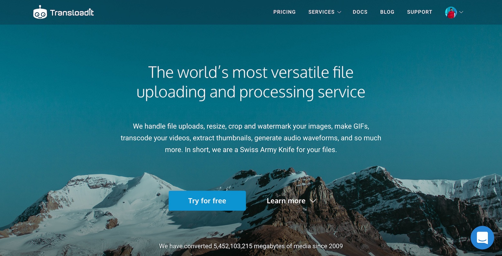
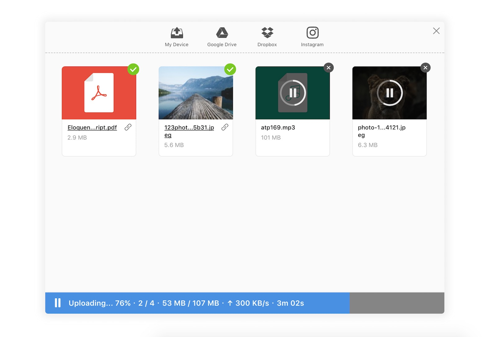
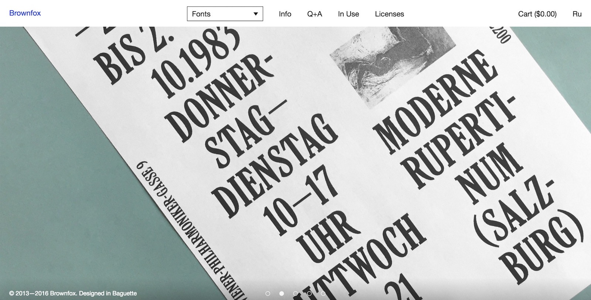
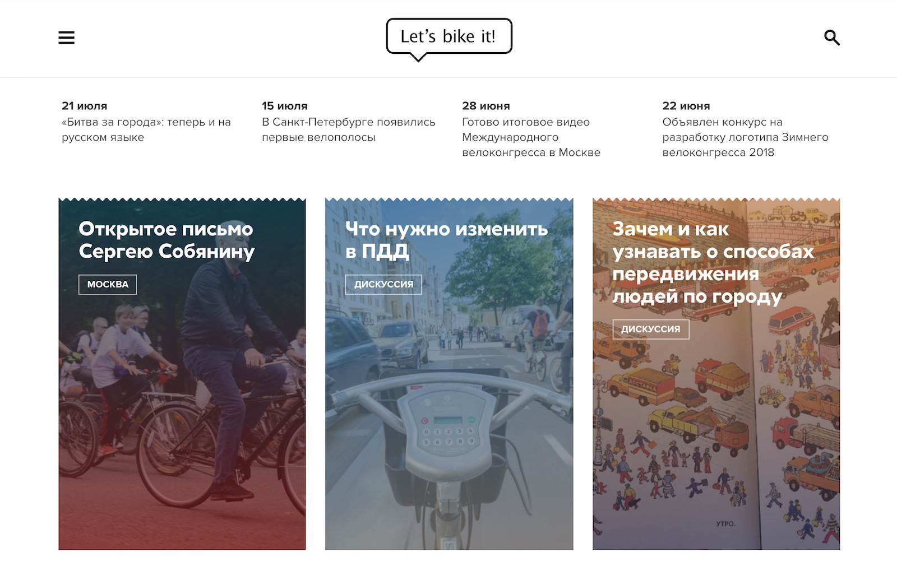
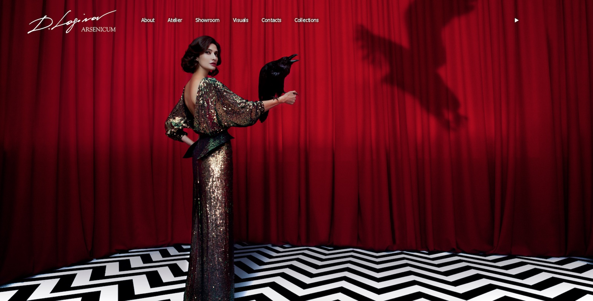
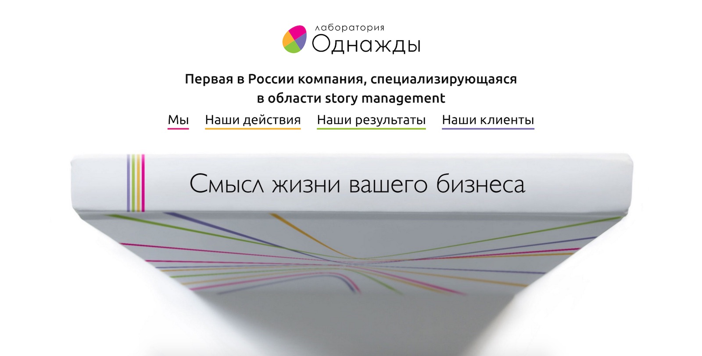
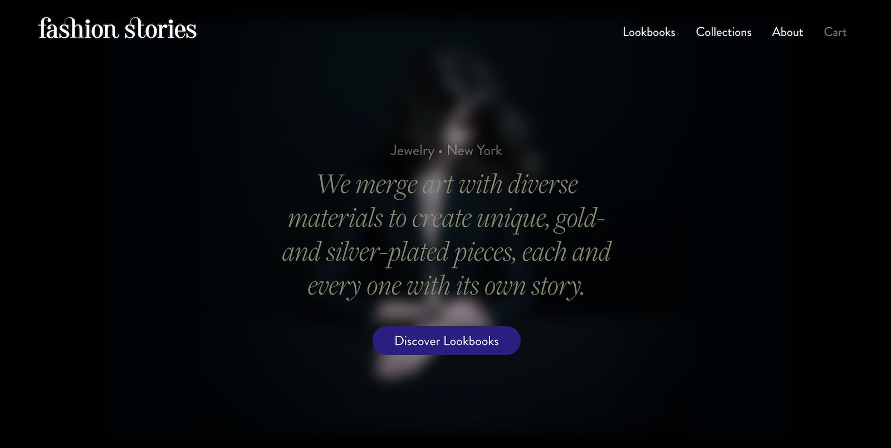

Baguette
Baguette is a project bureau by Artur Paikin. We make websites and applications. While focusing on frontend development and design, we also do backend and sometimes bake muffins.
Get in touch at hello@unebaguette.com and check out selected projects below:
-

Transloadit
transloadit.com
Transloadit is a Swiss Army Knife for files: it can resize, crop and watermark your images, make GIFs, transcode your videos, extract thumbnails, generate audio waveforms, and more. We’ve redesigned and built a brand new homepage that highlights Transloadit’s features, services and ease of integration.
-

Uppy
uppy.io
Uppy is a sleek, modular file uploader that integrates seemlessly with any application. It’s fast, easy to use and lets you worry about more important problems than building a file uploader. We’ve designed and developed a modern user interface for Uppy that accomodates file previews, action buttons, upload progress, notification system, metadata editing, picking files from external services, camera interface, and more.
-
Serebro Nabora
serebronabora.com
Annual international type conference held in Moscow. Responsive website with support for two languages and a flexible admin interface that helps easily alter conference programm, rearrange content blocks and update information.
-

Brownfox
brownfox.org
Independent type foundry Brownfox offers a fresh perspective on Latin and Cyrillic fonts. Clean website pairs nicely with an innovative flexible type tester, as well as nice and easy to use licence picking options.
-

Let’s bike it!
letsbikeit.ru
Let’s bike it! is a cycling culture development project that changed Russian cities forever with their. We’ve designed a gorgeus website capable of delivering short news, as well as long editorial piecies on urban development around the globe.
-
Bike to Work
bike2work.ru
Website design for Bike to Work days in Russia. Started in Moscow, now spread throughout the country, with roughly 10,000 participants. The admin interface allows to add and customize page blocks like Instagram feeds or columns and buttons, and even add cities with their own subdomains. Bike to Work has been featured on billboards in subway and throughout the city, feels good.
-
Local Food
locallocal.ru
Local Food organizes food markets, sells a food box full of products supplied by the local farmers and offers a coworking space for the aspiring food entrepreneurs. On the website you can learn more about each of their projects, submit an application or order a food box.
-

Arsenicum
arsenicum.co.uk
Arsenicum is a world-renowned fashion brand that designs clothing and creates unique fashion shows with screaming elegance, smart essentricity and wild fantasies which became real on the catwalk. We designed a website for Arsenicum that helps transmit those experiences through the lens of digital media.
-

Once Upon a Time
storymanagement.ru
The website we designed and developed for Once Upon a Time askes the question “What is the purpose of your business?”. Then Once Upon a Time steps in and gives you the answer.
-

Fashion Stories
fashionstories.nyc
Fashion Stories is a Moscow-based internation fashion jewelry line with a unique vision. For its arrival in New York a re-imagined web experience was needed, and we delivered — stunning visual effects and gorgeous typography, paired with a clean and simple in-page shopping cart, and checkout process.
-

Lettera
lettera.co
Lettera tells you about one book worth your attention every week, and then let’s you purchase it right there in two clicks. For Kindle, iOS, Android or microwaves, DRM-free and all. We’ve desgined and built all the templates and styles for the Rails app that powers Lettera to make it look and work great.
-
Koti Home Automation System
github.com/arturi/kotihome
Home automation system based on Arduino with sensors, Raspberri Pi, Node.js, Express, MQTT and Socket.io. Features an extendable control panel in React and a friendly robot that you can talk to over microphone or chat via Telegram Bot API.
-
Elena Zaharova
elenazaharova.com
Elena decorates shop windows and spaces: her goal is for the shops to welcome people in, place each handbag on its very spot and make sure visitors have a great time. We’ve made a site-portfolio and a blog where Elena writes about her travels, book recommendations, shoe reviews and work process.
-
Label Maker
arturi.github.io/labelmaker
A plugin that lets you put markers on pictures that expand into comment bubbles when clicked or hovered. Responsive. Stores data as an HTML list (ul or ol) to make it accessible and indexable.
-

Made by Sloths
An online store that sells stickers and illustrations by designers from all over the world. Powered by Shopify.
-
Sergey Korol
sergeykorol.ru/blog
Sergey Korol blogs about books, traveling, vintage cameras and unusual things. At Baguette we’ve redesigned blog templates for the best readability on any screen. Features: full screen images on click, image sliders and embeds, side notes and standouts from the main text.
We’d love to work with you! Email us at hello@unebaguette.com with questions and project inquiries.